Git¶
Система контроля версий Git¶
Трудно определить точное количество людей, использующих Git. Тем не менее, Git широко применяется разработчиками и организациями по всему миру и считается самой популярной системой контроля версий.

Git — это система управления версиями (Version Control System, VCS) с распределенным контролем состояния репозитория. Это значит, что каждый разработчик имеет полную копию репозитория (директория, содержащая все файлы проекта и историю изменений этих файлов) на локальном компьютере. Это позволяет команде разработчиков работать с кодом проекта одновременно и без конфликтов.
Краткий исторический экскурс¶
Git — это система контроля версий, созданная Линусом Торвальдсом в 2005 году. Она была разработана как средство для обслуживания ядра Linux, но в настоящее время широко используется в различных проектах и доменах. Основная цель Git — предоставить быстрый и надежный способ хранения и контроля версий кода, чтобы разработчики могли легко отслеживать изменения, откатывать их и работать в команде.
Согласно отчету GitHub Octoverse за 2019 год, на GitHub было более 40 миллионов пользователей, и большинство из них используют Git в качестве своей системы контроля версий. Кроме того, в отчете говорится, что на GitHub было более 100 миллионов репозиториев, и только в 2019 году в эти репозитории было внесено более 2,1 миллиарда материалов.
Помимо GitHub, Git также используется на других платформах, таких как GitLab и Bitbucket, а также разработчиками, которые размещают свои собственные репозитории Git. Поэтому можно с уверенностью сказать, что миллионы разработчиков используют Git для контроля версий и совместной работы. В целом, использование Git постоянно растет, поскольку он широко применяется разработчиками, различными организациями и корпорациями по всему миру, став негласным стандартом.
Выполним несколько простых действий, чтобы начать работать с этим крутым инструментом. Для начала нужно определиться с целью: поскольку Git — это прежде всего инструмент для удобной и эффективной работы команды разработчиков с кодом, мы сформулируем следующую задачу:
Мы команда IT стартапа. У нас есть исходный код нашего продукта. Мы планируем его развивать, а также добавлять новый функционал, расширяя его возможности. Также мы планируем постепенно подключать к работе новых разработчиков. Делиться кодом в соцсетях, как и с помощью облачных сервисов, ненадежно и опасно как для нашего проекта, так и для пользователей нашего продукта. В таком случае всегда есть риск «порчи кода», кражи интеллектуальной собственности, роста ошибок и уязвимостей в коде из-за отсутствия единой системы контроля версий. Мы будем использовать тестовый код, представленный ниже.
Приступаем к использованию Git¶
Скачаем приложение Git c официального сайта: https://git-scm.com и установим его на компьютер.
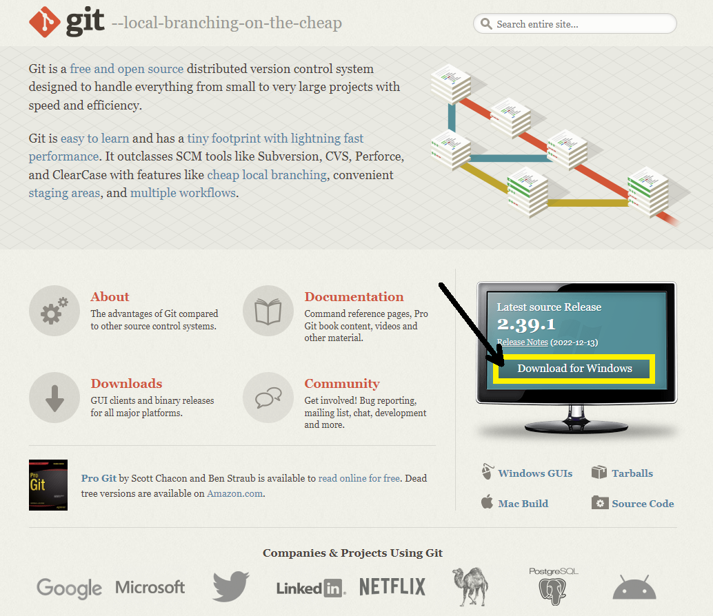
В случае, если вы используете ОС Windows, выберите подходящий вариант, соответствующий разрядности вашей ОС (x64, x32).
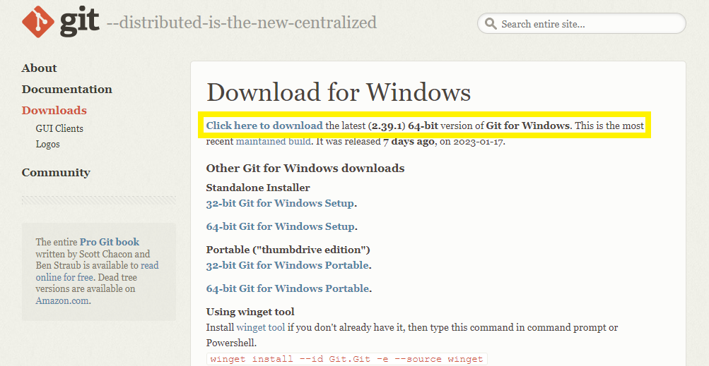
Запустите установочный файл и следуйте инструкциям.
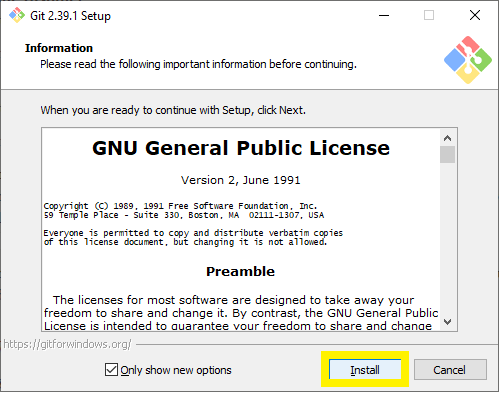
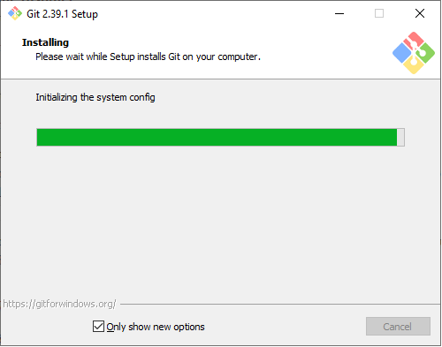
В результате у вас должно отобразиться следующее окно, сообщающее об успешной установке Git на ваш компьютер.
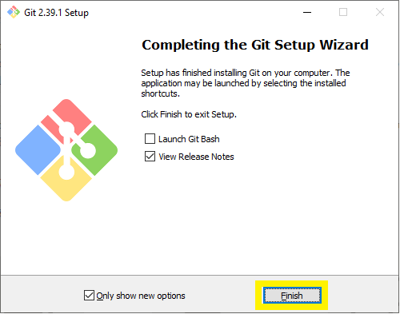
После завершения установки убедимся в том, что Git корректно установился на компьютер и мы можем приступать к работе. Для этого откроем командную строку в Windows и введем команду git, как это показано на рисунке 2.
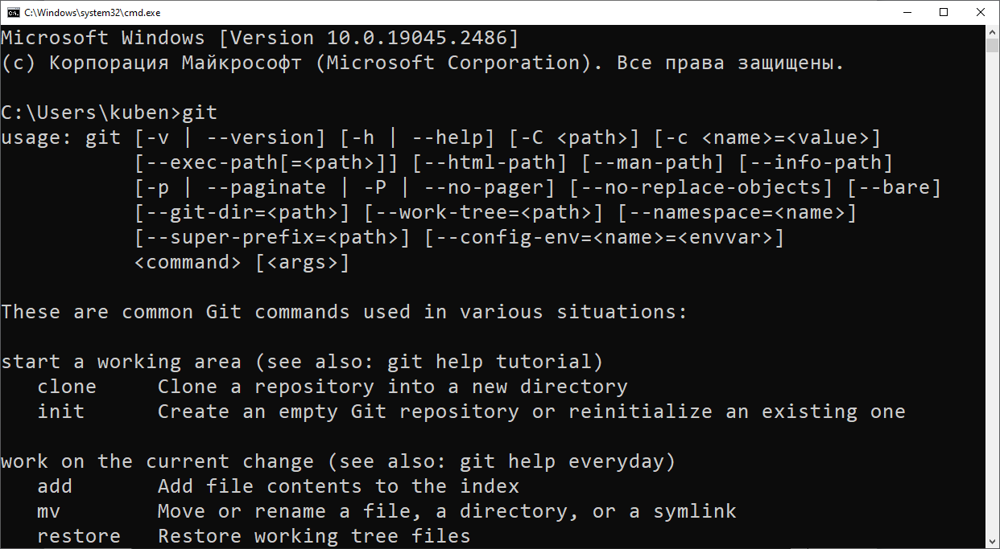
Рисунок 2 — Командная строка Windows с введенной командой git
В окне консоли должна отобразиться информация о командах Git, как показано на риcунке 2.
Если у вас возникли проблемы, попробуйте удалить git из системы и повторить процесс установки, внимательно следуя инструкциям и указаниям программы-установщика git.
Тестовый код программы¶
В качестве примера будем использовать код тестовой программы, разработанной на языке Python, для наглядной работы с системой контроля версий git. Тестовая программа выполняет запрос на сервис погоды OpenWeatherMap, используя обращение к сервису по API, затем полученный результат записывается в базу данных SQLite.
import requests
import sqlite3
# Connect to the SQLite database
conn = sqlite3.connect("example.db")
cursor = conn.cursor()
# Create a table to store the data
cursor.execute("""
CREATE TABLE IF NOT EXISTS weather (
id INTEGER PRIMARY KEY,
city TEXT,
temperature REAL
)
""")
# Make a request to the API
url = """https://api.openweathermap.org/data/2.5/weather?
q=London&appid=your_api_key"""
response = requests.get(url)
data = response.json()
# Extract the relevant data
city = data["name"]
temperature = data["main"]["temp"]
# Insert the data into the table
cursor.execute("INSERT INTO weather (city, temperature) VALUES (?, ?)",
(city, temperature)
)
# Commit the changes to the database
conn.commit()
# Close the connection to the database
conn.close()
Описание тестовой программы¶
Эта программа сначала подключается к базе данных SQLite с именем example.db и создает таблицу с именем weather, если она еще не существует. Затем она делает запрос к общедоступному API (в данном случае API OpenWeatherMap), используя библиотеку запросов requests. Ответ от API анализируется как JSON, и из него извлекаются необходимые данные. Наконец, данные вставляются в таблицу weather в базе данных SQLite с помощью оператора вставки SQL, и изменения фиксируются.
Обратите внимание, что вам нужно заменить your_api_key на ваш собственный ключ API из OpenWeatherMap API, иначе данный код не будет работать. Кроме того, на вашем компьютере должна быть установлена библиотека sqlite3, она используется для работы с базой данных SQLite.
Важно иметь в виду, что этот код является примером, и в нем отсутствуют многие важные детали, которые должны учитываться перед выпуском проекта в виде готового продукта. Например, обработка ошибок и исключительных ситуаций, таких как сбои соединения, ошибки API и возможные ошибки выполнения SQL-запроса к СУБД. Также данный код не учитывает должным образом вопросы безопасности. Используя данный тестовый код, разработчики должны понимать, какие недостатки в нем присутствуют.
Оформление рабочего каталога¶
Для удобства работы с файлами проекта создадим директорию с названием my_project, например, на диске D:\. Можно выбрать другое расположение папки с проектом. В качестве примера далее будем считать, что путь к файлам проекта выглядит следующим образом: «D:\my_project».
Перейдем в директорию с нашим проектом (my_project) и вызовем командную строку, как показано на рисунке 3. Для этого нужно нажать на строку, содержащую путь к текущей папке, ввести команду cmd и нажать на клавиатуре кнопку Enter.
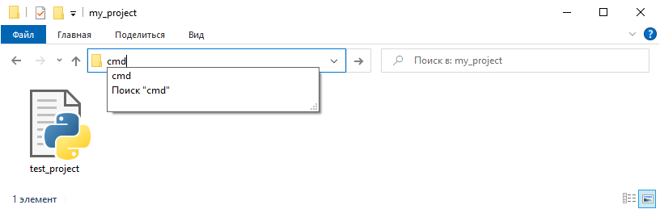
Рисунок 3 — Вызов командной строки в текущей папке
После выполнения данной команды должно отобразиться окно консоли (рисунок 4). В этом окне мы продолжим работу с Git.
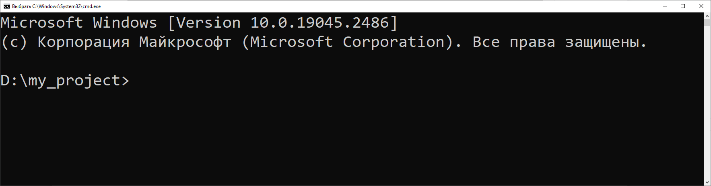
Рисунок 4 — Командная строка в текущей папке проекта
Настройка конфигурации git¶
Перед тем как приступить к работе с кодом, нужно выполнить краткую настройку Git, а именно — указать имя пользователя и почтовый адрес. Эта информация используется системой Git для отслеживания операций всех пользователей проекта в репозитории. Это нужно сделать только один раз, при работе с другим проектом вам не придется повторно указывать имя пользователя и почтовый адрес.
Команда git |
Описание |
|---|---|
git config –global user.name «Ivan Ivanov» |
Изменяем имя пользователя в git |
git config –global user.email my_email@example.com |
Изменяем название почты пользователя |
Ниже представлен пример выполнения данных команд в консоли Git:
git config --global user.name "Ivan Ivanov"
git config --global user.email my_email@example.com
Репозиторий — это каталог, в котором располагаются все файлы одного проекта. В нашем случае у нас есть каталог «my_project», его мы и будет использовать. В итоге у вас должно получиться так же, как показано на рисунке 5.
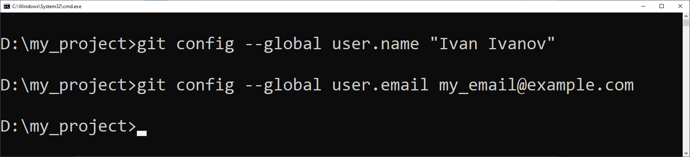
Если вы хотите проверить используемую конфигурацию, можете применить команду git config --list, чтобы показать все настройки Git текущего репозитория:
user.name= Ivan Ivanov
user.email= my_email@example.com
color.status=auto
color.branch=auto
color.interactive=auto
color.diff=auto
Также вы можете проверить значение конкретного ключа, выполнив git config <key>:
git config user.name
Ivan Ivanov
Если вам нужна помощь при использовании Git, есть три способа открыть страницу руководства по любой команде:
git help <команда>
git <команда> --help
Например, так можно открыть руководство по команде git config:
git help config
После ввода имени пользователя и адреса электронной почты можно закончить с настройкой и перейти к знакомству с основными командами Git.
Для базового варианта использования Git достаточно знать всего несколько команд для ведения истории изменений.
Команда
git initсоздает в текущем каталоге новый подкаталог с именем.git, содержащий все необходимые файлы и структуру git репозитория. На этом этапе ваш проект еще не находится под версионным контролем.Команда
git addдобавляет содержимое рабочего каталога в индекс (staging area) для последующего коммита:git add <название файла_1, название файла_2>. По умолчаниюgit commitиспользует лишь этот индекс, так что вы можете использоватьgit addдля сборки слепка вашего следующего коммита. Это одна из ключевых команд Git.Команда
git statusпоказывает состояния файлов в рабочем каталоге и индексе: какие файлы изменены, но не добавлены в индекс; какие ожидают коммита в индексе. Вдобавок к этому выводятся подсказки о том, как изменить состояние файлов.Команда
git commitберет все данные, добавленные в индекс с помощьюgit add, и сохраняет их слепок во внутренней базе данных, а затем сдвигает указатель текущей ветки на этот слепок.Команда
git pushиспользуется для установления связи с удаленным репозиторием, определения локальных изменений, отсутствующих в текущей версии кода, и собственно их передачи на удаленный репозиторий, например, GitHub или Bitbucket.Команда
git pullработает как комбинация командgit fetchиgit merge, т.е. Git вначале забирает изменения из указанного удаленного репозитория, а затем пытается объединить их (выполнить слияние) с текущим кодом (веткой).
Первый пример работы с git¶
Отлично! Теперь, когда мы настроили параметры нашего git и познакомились с основными командами, сделаем следующее:
Выполним инициализацию репозитория в папке с проектом.
Проверим статус нашего репозитория.
Добавим файл с тестовым кодом test_project.py для отслеживания его изменений в git.
Создадим первый коммит и посмотрим, как изменится статус git.
Шаг 1: Инициализация нашего рабочего каталога (репозитория) Когда вы инициализируете репозиторий командой
git init, Git создает ветку с именем master по умолчанию. В результате мы настроили рабочее окружение Git и выполнили инициализацию репозитория (рисунок 6).
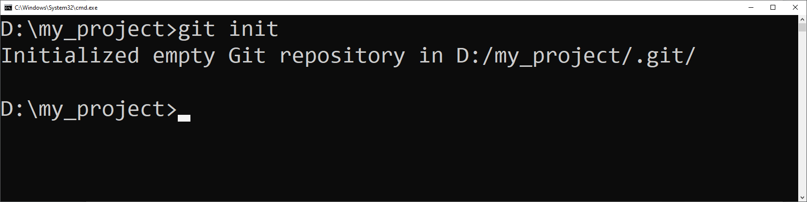
Рисунок 6 — Вызов команды git init
Шаг 2: Проверка статуса репозитория После того как был создан репозиторий, мы можем отслеживать все изменения (статус) в рабочей папке нашего проекта, вызвав команду
git status. Что это значит? Дело в том, что после выполнения командыgit initвсе изменения в директории my_project будут контролироваться (отслеживаться) системой управления версиями Git. В директории my_project есть файл test_project.py с тестовым кодом на языке Python. Давайте выполним командуgit status, как показано на рисунке 7.
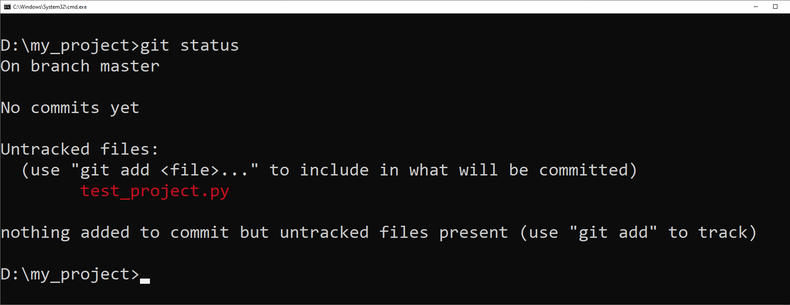
Рисунок 7 — Вызов команды git status
В результате работы команды git status мы видим несколько сообщений. Давайте разберемся, что они означают.
Сообщение Git |
Описание |
|---|---|
On branch master |
Сообщение, в котором содержится информация о том, что мы находимся в ветке master. |
No commits yet |
В текущий момент нет коммитов, готовых для их фиксации, внесения каких-либо подготовленных изменений в проект. |
Untracked files: use «git add |
Найден файл «test_project.py», который в данный момент находится в папке проекта, но его состояние пока не контролируется системой git. И дается справка о том, что для добавления этого файла нужно использовать команду git add. |
nothing added to commit but untracked files present (use «git add» to track) |
Отсутствуют коммиты, но присутствуют неотслеживаемые файлы. |
С этого места давайте поподробней. Команда git status вывела нам подробную информацию о том, в каком состоянии в данный момент находится наш проект с точки зрения системы контроля версий Git. В текущей директории есть файл test_project.py с тестовым кодом, и пока что изменения этого файла никак не отслеживаются. Поскольку мы планируем работать с этим кодом и хотим знать, какие измения были внесены нами, либо кем-то из разработчиков нашей команды, нам нужно добавить его под контроль Git.
Шаг 3: Добавление файла для отслеживания изменений git Чтобы добавить файл для отслеживания его изменений, выполним команду
git add test_project.py, как показано на рисунке 8.
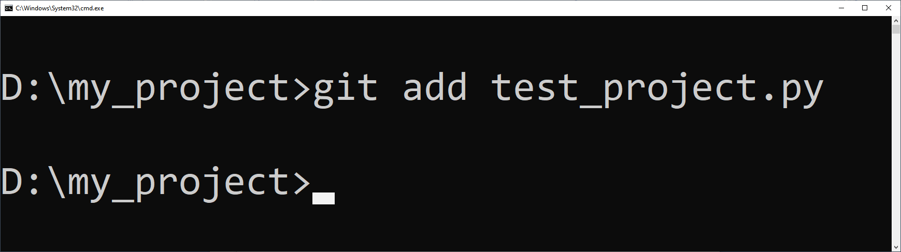
Рисунок 8 — Вызов команды git add
Выполним повторно вызов команды «git status» и посмотрим, что изменилось (рисунок 9).
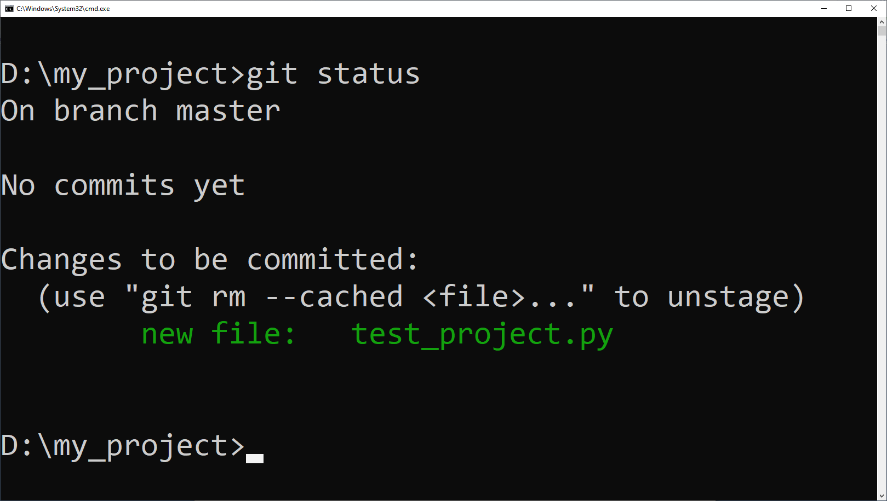
Рисунок 9 — Вызов git status после выполнения команды git add
Видим, что теперь текст сообщения несколько изменился. Изменилась строка с названием нашего тестового файла. Ранее она была выделена красным цветом (рисунок 6). Сейчас же эта строка выделена зеленым цветом, и добавилась приставка «new file: test_project.py». Это означает, что теперь Git начал следить за изменениями этого файла, но пока мы их не зафиксировали. Другими словами, Git увидел файл и готов зафиксировать это изменение. Для этого нам надо выполнить коммит (commit).
Шаг 4: Создаем коммит Чтобы сделать коммит (сохранить изменения и зафиксировать текущую версию), выполним следующую команду:
git commit –m "текст сообщения — начинаем использовать git!". На рисунке 10 видим, что Git обработал нашу команду и вернул результат, в котором сказано, что в ветке master изменен 1 файл, в который добавлено 26 строк.
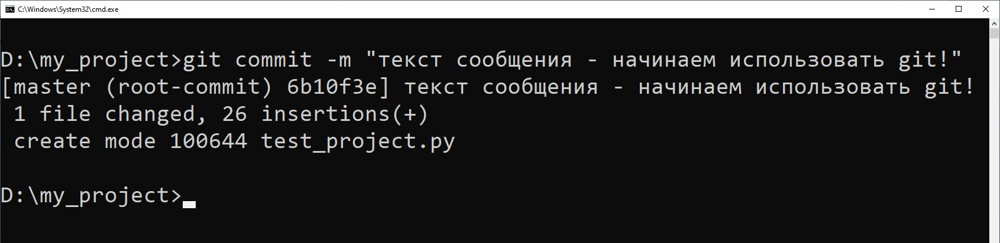
Рисунок 10 — Создание первого коммита
Другими словами, до того, как мы добавили файл (git add) и создали коммит (git commit), нашей системе Git нечего было отслеживать, поскольку в нем не было ни одного коммита. Теперь немного остановимся на самой команде «git commit».
После команды git commit мы использовали параметр –m и в кавычках " " написали сообщение для коммита. Это очень полезная фишка для комментирования изменений кода. Например, мы добавили в код новую функцию или исправили ошибку в работе программы и хотим зафиксировать это улучшение, кратко сформулировав смысл вносимых в код изменений.
Сейчас в нашем проекте «test_project.py» нет проверок корректности данных, как и проверки наличия связи с удаленным сервером погоды (OpenWeatherMap). Когда мы добавим проверку корректности данных, нужно будет создать коммит и в качестве комментария указать: «Добавлена проверка кода ответа от сервера OpenWeatherMap. Если код ответа: 200, данные корректны, в другом случае возникает обработка исключительной ситуации».
Конечно, помимо сообщения при создании коммита рекомендуется использовать комментарии в коде программы и вести документацию.
Для отслеживания всех изменений Git удобно использовать утилиту git-show — это утилита командной строки, которая используется для просмотра подробных данных об объектах Git (рисунок 11).
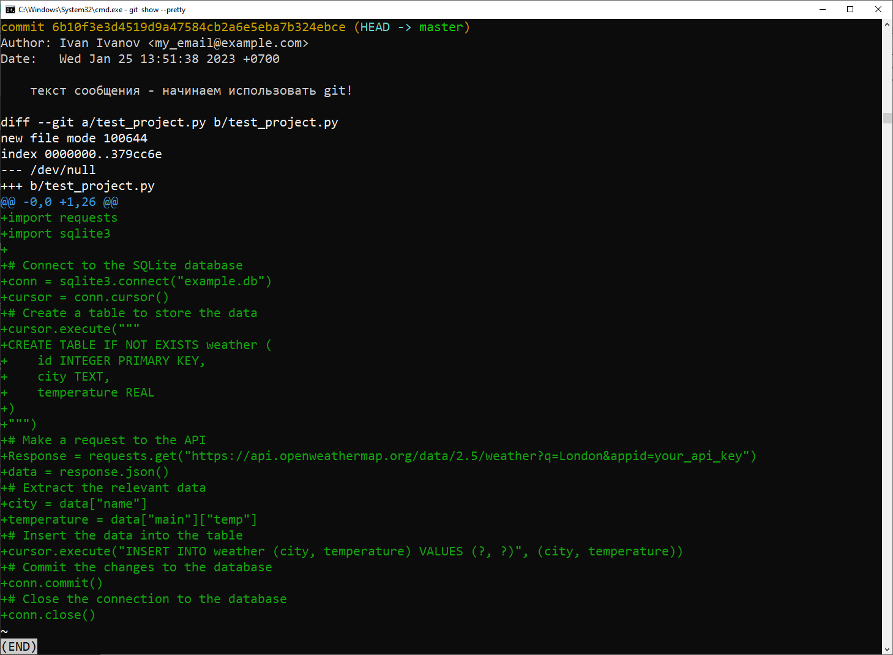
Рисунок 11 – Отображение подробной информации вызовом команды git show --pretty
Что делать, если ошибочно внесли неполное или некорректное описание коммита?
В этом случае не стоит паниковать — всегда можно изменить содержание коммита. Чтобы изменить последний коммит, используйте команду: git commit –amend. После вызова команды откроется текстовый редактор, в котором можно изменить текст сообщения (рисунок 12).
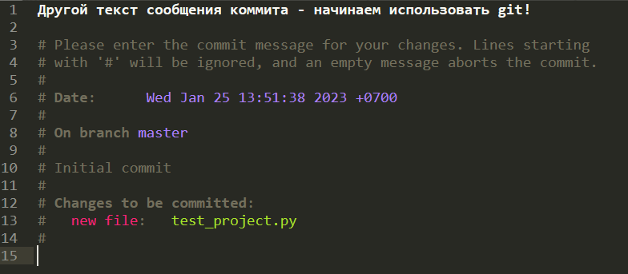
Рисунок 12 – Окно редактора текста, в котором можно изменить последний коммит
После того, как вы внесете изменения в текст коммита, нужно сохранить изменения в этом файле. После этого в консоли отобразится «новое сообщение» измененного коммита (рисунок 13).
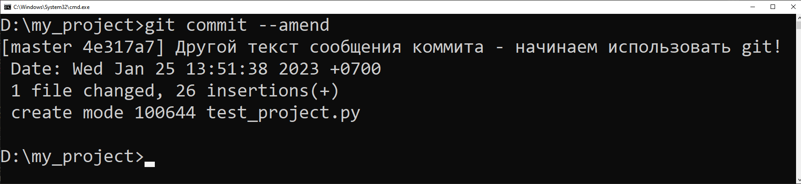 Рисунок 13 — Отображение изменений коммита
Попробуйте внести изменения в файл «test_project.py». Например, следующим образом:
(код):
import requests
import sqlite3
# Connect to the SQLite database
conn = sqlite3.connect("example.db")
cursor = conn.cursor()
# Create a table to store the data
cursor.execute("""
CREATE TABLE IF NOT EXISTS weather (
id INTEGER PRIMARY KEY,
city TEXT,
temperature REAL
)
""")
# Make a request to the API
try:
url = """https://api.openweathermap.org/data/2.5/weather?""" \ """q=London&appid=your_api_key"""
Response = requests.get()
Response.raise_for_status()
data = response.json()
# Extract the relevant data
city = data["name"]
temperature = data["main"]["temp"]
# Insert the data into the table
cursor.execute("INSERT INTO weather (city, temperature) VALUES (?, ?)",
(city, temperature))
# Commit the changes to the database
conn.commit()
# Close the connection to the database
conn.close()
except requests.exceptions.HTTPError as err:
print(err):
Мы добавили в код проверку возникновения исключительных событий. Исключения необходимы для того, чтобы сообщать программисту об ошибках, а также корректно их обрабатывать, чтобы избавиться от экстренного завершения работы программы. Сохраните изменения в файле с кодом и вызовите команду git status. Посмотрите, какой будет результат.
Вот несколько шагов, которые помогут начать работу с Git:¶
Изучите основы: начните с основных команд Git, таких как git init, git add, git commit, git branch, git checkout, git merge и git push. В Интернете есть множество ресурсов: учебные пособия, видеоролики и документация, которые могут помочь понять основные концепции и команды.
Лучший способ изучить Git — это использовать его. Создайте новый проект, возьмите наш тестовый проект или найдите проект с открытым исходным кодом и начните экспериментировать с командами Git. Совершайте коммиты, создавайте ветки и пробуйте разные сценарии рабочего процесса Git.
Что такое публичный и приватный репозиторий?¶
В Git репозиторий (или сокращенно «репо») — это набор файлов и каталогов, которые отслеживаются системой контроля версий. Репозиторий может быть как общедоступным, так и частным.
Общедоступный репозиторий. Общедоступный репозиторий — это репозиторий, доступный для всех, у кого есть URL-адрес репозитория. Любой может просмотреть файлы, загрузить их и сделать копию репозитория. Публичные репозитории часто используются для проектов с открытым исходным кодом, где каждый может внести свой вклад в код. Публичные репозитории также используются для обмена кодом с другими или для того, чтобы сделать код доступным для использования другими.
Частный репозиторий. Частный репозиторий недоступен никому, кроме людей, которым был предоставлен доступ. Эти репозитории часто используются для проектов с закрытым исходным кодом, где код не предназначен для общего доступа. Частные репозитории также используются для хранения кода, который не готов к публичному выпуску, или для конфиденциальной информации, которой не следует делиться с общественностью. Основное различие между двумя типами репозиториев — в том, что общедоступные репозитории видны и доступны всем, а частные репозитории видны и доступны только избранной группе людей. Стоит отметить, что большинство служб хостинга Git, таких как GitHub, GitLab, Bitbucket, предлагают как общедоступные, так и частные репозитории с разными ценами и ограничениями. Некоторые из них предлагают бесплатные планы для общедоступных репозиториев и взимают плату за частные.
GitHub, GitLab и Bitbucket — популярные платформы хостинга Git, которые предоставляют как общедоступные, так и частные репозитории. На этих платформах вы можете сделать свой репозиторий общедоступным или частным при его создании. Вы также можете изменить видимость репозитория позже, но изменить его обратно может быть немного сложнее, если он общедоступный. Важно помнить, что термины «общедоступные» и «частные» репозитории относятся к хостинговой платформе и пользователям, имеющим доступ к репозиторию, а не к Интернету в целом.
Зафиксируйте изменения git¶
Коммит — это моментальный снимок изменений, внесенных в файлы в репозитории Git. Он используется для сохранения и отслеживания хода проекта с течением времени. Вот шаги для фиксации изменений в Git:
Добавьте файлы в промежуточную область. Прежде чем делать фиксацию, вам необходимо добавить файлы, которые вы хотите включить в фиксацию, в промежуточную область. Вы можете сделать это, выполнив команду
git add file-nameилиgit add, чтобы добавить все измененные файлы.Создайте фиксацию: после добавления файлов в область подготовки вы можете создать фиксацию. Используйте команду
git commitдля создания коммита. Это откроет текстовый редактор по умолчанию, в котором вы можете написать сообщение фиксации.Фиксация с сообщением: вместо того, чтобы открывать текстовый редактор по умолчанию, вы можете использовать флаг
-mдля фиксации с сообщением, выполнив командуgit commit -m "Ваше сообщение фиксации".Зафиксировать с определенным файлом. Вы также можете зафиксировать определенный файл, выполнив команду
git commit имя-файла -m «Ваше сообщение о фиксации». Важно использовать четкие и описательные сообщения фиксации, которые объясняют сделанные изменения и причину, по которой они были сделаны. Это упрощает понимание истории проекта и помогает другим членам команды понять изменения. Кроме того, вы также можете использовать командуgit commit --amend, чтобы изменить последнюю фиксацию, илиgit commit --amend -c original-commit, чтобы изменить предыдущую фиксацию.
Немного статистики о системе git¶
Git — одна из наиболее широко используемых систем контроля версий в мире, и статистика ее использования отражает это. Вот некоторые показатели использования Git:
Популярность. Согласно опросу разработчиков Stack Overflow 2020, Git — самая популярная система контроля версий, которую используют более 88% разработчиков.
Проекты с открытым исходным кодом. По данным GitHub, на их платформе размещено более 100 миллионов репозиториев, и большинство из них представляют собой проекты с открытым исходным кодом, использующие Git в качестве системы контроля версий.
Использование в отрасли: Git используется в самых разных отраслях, включая разработку программного обеспечения, финансы, здравоохранение и госуправление.
Кроссплатформенность: Git можно использовать в операционных системах Windows, Mac и Linux, что делает его кроссплатформенным инструментом.
Интеграция: Git можно интегрировать с широким спектром инструментов и сервисов, таких как GitHub, GitLab, Bitbucket, Jenkins и другими.
Совместная работа: Git позволяет нескольким людям одновременно работать над одной кодовой базой и имеет встроенные инструменты для совместной работы, такие как запросы на вытягивание и проверки кода.
Принятие: согласно официальному веб-сайту Git, более 100 000 организаций по всему миру используют Git для контроля версий.
Эти статистические данные показывают, что Git — распространенный и универсальный инструмент, который используется большим количеством разработчиков и организаций по всему миру.